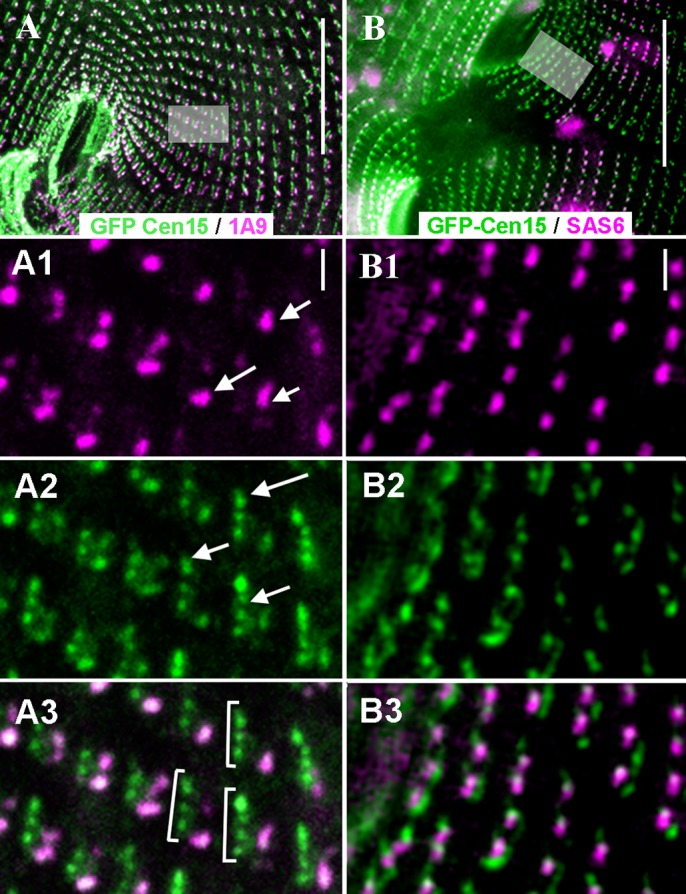

ICL1e complex
A basal-body-associated centrin assembly described in Paramecium tetraurelia as a functional complex of ICL1e-subfamily proteins. It appears as a discrete ICL1e-positive dot and persists in cells lacking the extended infraciliary lattice; it is distinct from the whole lattice and from the complete infraciliary-lattice organizing-centre remnant. [DOI:10.1242/bio.024273]

NCBITaxon:5888) · Anne Aubusson-Fleury, Guillaume Balavoine, Michel Lemullois, Khaled Bouhouche, Janine Beisson, France Koll; CC BY, via PubMed Central; Aubusson-Fleury et al., Centrin diversity and basal body patterning across evolution: new insights from Paramecium, Biology Open (2017), doi:10.1242/bio.024273. Copyright 2017. Published by The Company of Biologists Ltd. CC BY 3.0; unmodified Figure 3. · CC_BY_3_0 · source: PMC PMC5483020.1 BIO024273F3 · DOI:10.1242/bio.024273Synonyms: ICL1e dot
Part of: GO:0030863 — cortical cytoskeleton (no local record)
Components
| Component | Type | Part of / acts on | Grounding | Genes | Stoichiometry | Essential | Role |
|---|---|---|---|---|---|---|---|
| ICL1e-family centrins | Protein | part of | Reviewed label only (reviewed name; no accession asserted) | UNKNOWN | Centrin paralogue group defining the named basal-body-associated assembly; its molecular assembly requirements are not resolved separately for every paralogue.
|
Canonical examples
NCBITaxon:5888Paramecium tetraurelia — Methods lists d4-2, nd7-1 and Delta-CenBP1/nd7-1. The BP background lacks the extended lattice but retains the ICL1e complex; Figure 3 depicts dividing BP cells. Strain names remain metadata, not invented taxon identifiers. [DOI:10.1242/bio.024273]
Functions
- Cortical basal-body positioning support — Contributes to normal basal-body positioning and anchoring. Depletion produces developed but unanchored basal bodies, not a failure of duplication per se; this is not a universal requirement for direct association with every basal body.
DOI:10.1242/bio.024273Depletion and topological Results, Figures 4 and 5, distinguish cortical insertion defects from basal-body formation and describe delayed complex recruitment at some paired basal bodies.
- Right-proximal Centrin3 localization support — Supports the normal right-proximal Centrin3 signal. Its early loss after ICL1e depletion differs from the initial persistence of the left-proximal and tip signals; direct binding is not established.
DOI:10.1242/bio.024273Interaction Results and Figure 7 use GFP-Centrin3 localization after ICL1e RNAi, including STED observations.
- Infraciliary-lattice organizing-centre assembly support — ICL1e-family activity supports organizing-centre assembly. In BP cells, depletion leaves newly formed basal bodies without these remnants; complex duplication precedes later 1A9-reactive material during cortical reorganization.
DOI:10.1242/bio.024273Timing and depletion Results, Figures 3 and 4. This is a functional assembly dependence, not a resolved nucleation reaction or equivalence of the ICL1e complex with the whole organizing centre.
Mechanism graphs
Perturbation-based centrin localization dependencies (REGULATION)
| Subject | Predicate | Object | Evidence |
|---|---|---|---|
| Centrin2 | supports basal-body localization of | ICL1e complex |
|
| ICL1e complex | supports | Right-proximal Centrin3 localization |
|
Discussions
- CURATION_TODO (RESOLVED): Distinguish the named ICL1e assembly from a single centrin protein and neighboring structures. A discrete complex must not be merged with the whole lattice solely because they share a protein subfamily.
- CURATION_TODO (OPEN): Resolve exact ICL1e-family groundings and the molecular composition of the discrete complex. Colocalization and nonredundancy do not determine copy number, direct interaction or an exhaustive molecular inventory.
- CURATION_TODO (RESOLVED): Keep localization dependencies and candidate connectors separate from established constituents. An upstream recruitment factor, downstream signal or neighboring marker is not automatically part of a complex.
- CURATION_TODO (RESOLVED): Reconcile anchoring phenotypes with delayed complex recruitment at paired basal bodies. Whole-cell depletion phenotypes cannot establish a universal requirement for a detectable complex at every basal body.
- CURATION_TODO (OPEN): Test complex conservation and molecular architecture beyond the characterized Paramecium system. Conserved paralogues are not evidence that another organism builds the same assembly with the same function.
Evidence
DOI:10.1242/bio.024273Aubusson-Fleury et al. (2017), Centrin diversity and basal body patterning across evolution: new insights from Paramecium. Read primary Results on localization, timing, depletion, topological relationships and centrin interactions; essential-function Discussion; strain, RNAi, immunostaining and microscopy Methods; Figures 2-7 legends. Europe PMC JATS and versioned PMC OA JATS provide direct full-text evidence, not a review-only attribution.GO:0140535Verified non-obsolete intracellular protein-containing complex; a broader parent rather than an exact identity.GO:0030863— cortical cytoskeleton Verified non-obsolete cortical cytoskeleton. Parthood describes normal cortical organization, not perturbation-induced intracellular displacement.
Curation history
2026-10-03T21:20:08Zcodex · CREATED_RECORD — Scaffolded by scripts/new_record.py2026-10-03T21:20:41Zcodex · EXPANDED_RECORD — Added primary localization and depletion evidence, scoped component and functions, perturbation-based localization graph, boundary discussions, verified taxonomy and licensed Figure 3.2026-10-03T21:24:02Zcodex · CORRECTED_SOURCE_CONTEXT — Corrected the section attribution of the hypothetical Sfi1 connection to the interaction Results; retained its exclusion from established constituents.